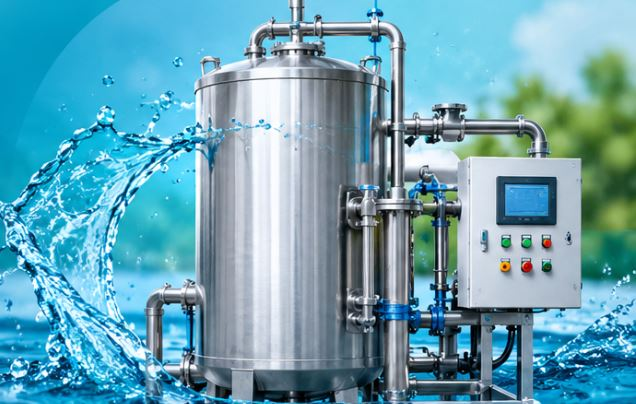

Powerful oxidation technology designed to break down complex organic pollutants, improve water quality and support advanced industrial wastewater treatment.

Advanced Oxidation Process (AOP) is an advanced water treatment technology that uses powerful oxidants to generate highly reactive species, particularly hydroxyl radicals (•OH), for breaking down complex organic contaminants.
Different AOP configurations combine technologies such as ozone, ultraviolet (UV) light and hydrogen peroxide to improve oxidation reactions and treat challenging water and wastewater streams.
Sandor Tescon Aqua provides water treatment solutions that can incorporate advanced oxidation technologies according to water characteristics, treatment objectives and project requirements.
Hydroxyl radicals are highly reactive oxidizing species that can react with many organic compounds. Their formation and effectiveness depend on the selected oxidants, treatment conditions and water quality.
An advanced oxidation system can combine different equipment and treatment technologies depending on the required oxidation process and water treatment application.
Generates ozone gas for use as an oxidant in suitable advanced oxidation treatment configurations.
Provides ultraviolet irradiation for UV-based oxidation configurations and selected treatment processes.
Provides controlled peroxide dosing where required for selected oxidation processes.
Provides suitable contact and reaction conditions for the selected oxidation technology.
Supports monitoring of important operating parameters such as flow, pressure and selected water quality indicators.
Provides control and coordination of the treatment equipment and operating conditions.
Different oxidation technologies can be selected and combined based on the characteristics of the water and the required treatment performance.
Uses ozone as an oxidant and can be combined with other treatment methods to support advanced oxidation reactions.
Combines ultraviolet light with suitable oxidants to generate reactive species for selected water treatment applications.
Combines ozone and hydrogen peroxide to promote the formation of hydroxyl radicals under suitable operating conditions.
Uses UV irradiation to activate hydrogen peroxide and produce reactive hydroxyl radicals.
Integrates suitable oxidation technologies into a customized treatment arrangement based on project requirements.
Configurations selected according to contaminant characteristics, water quality and required treatment objectives.
AOP technology can be evaluated for industrial and municipal water treatment applications where conventional treatment may not adequately address certain persistent contaminants.
Treatment of selected industrial wastewater streams containing difficult-to-treat organic pollutants.
Oxidation-based treatment for selected colour compounds and organic contaminants in textile wastewater.
Evaluation of advanced oxidation for selected pharmaceutical residues and complex wastewater.
Application-specific oxidation treatment for selected chemical process wastewater streams.
Can be considered as an advanced treatment stage for selected municipal wastewater applications.
Can support selected water reuse treatment arrangements when combined with suitable treatment and polishing stages.
AOP systems can provide additional treatment capabilities for water streams containing challenging contaminants. Actual performance depends on process design and water characteristics.
Helps oxidize selected organic compounds that may be difficult to remove through conventional treatment alone.
Can support improved water quality by targeting specific contaminants identified during treatment studies.
Supports advanced treatment strategies for managing selected organic contaminants in water and wastewater.
Different oxidation methods can be selected and integrated based on project-specific requirements.
Provides an additional treatment option for challenging wastewater applications.
Can be integrated with suitable existing water treatment systems and process stages.
The treatment sequence is configured according to the selected oxidation technology and the characteristics of the wastewater.
Incoming water is assessed and pre-treated as required to prepare it for oxidation.
Suitable oxidants such as ozone or hydrogen peroxide are supplied according to the selected AOP configuration.
Reactive species are generated to oxidize targeted organic contaminants under controlled conditions.
Treated water undergoes appropriate polishing and quality checks based on the intended reuse or discharge.
Share your water quality details, wastewater characteristics, flow rate and treatment objectives with us. Our team can help evaluate a suitable Advanced Oxidation Process configuration for your project.
Discuss Your Requirement